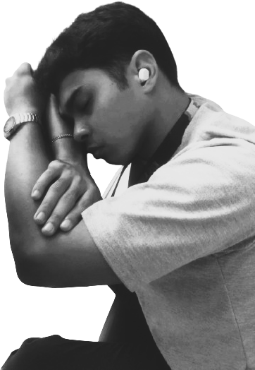
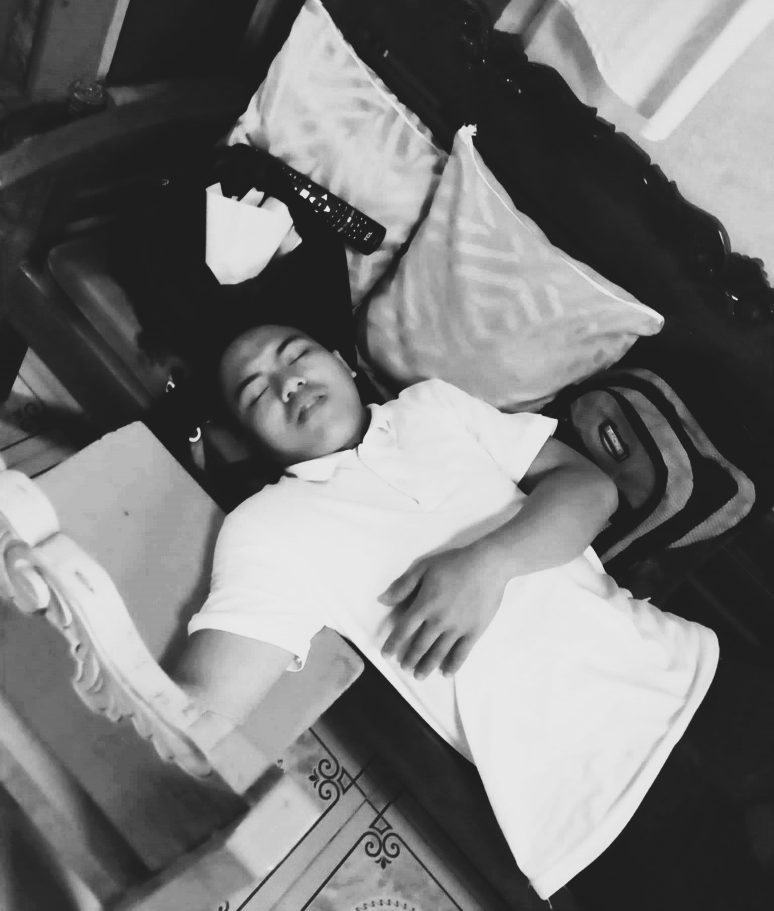

In the midst of demanding coursework and long study hours, it's no surprise that some Bachelor of Science in Computer Engineering (BSCpE) 3 Day students find themselves dozing off during lectures.
With subjects ranging from complex algorithms to circuit design, these students often pull late-night study sessions, sacrificing sleep to meet deadlines. As a result, the classroom occasionally turns into a place where exhaustion catches up with them.
Despite best efforts to stay alert, the classroom often becomes a place where students unintentionally give in to sleep.
Whether it's the afternoon slump after lunch or the lull of a particularly theoretical lecture, heads begin to droop, and eyelids get heavy. For BSCpE 3 Day students, it’s a scene that has become almost normalized.
Why do students fall asleep in class? The answer is simple: they are tired. A typical BSCpE student spends long hours studying, especially at night when distractions are minimal.
Group projects and programming assignments often take longer than anticipated, pushing students to work late into the early morning hours. Sleep becomes a luxury that few can afford.
The issue of sleep deprivation among students, especially in challenging programs like BSCpE, is a serious one.
To manage workloads without sacrificing sleep, experts recommend effective time management.
Regular breaks during study sessions are also vital for preventing burnout and improving focus. Short breaks allow the brain to recharge, leading to better productivity, reduced stress, and more efficient learning.
The sleeping students of BSCpE 3 Day are not unique. They represent a broader struggle faced by many college students worldwide. Their battles with exhaustion highlight the challenges of modern education and the pressures students face to perform at their best.
However, in the moments when they nod off, they remind us that even the most dedicated students need rest — and that sometimes, a brief nap in the middle of class is a necessary part of surviving college life.